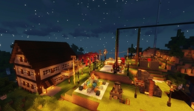

我々は2014年から、マイクラサーバーを運営し、そしてブロックの世界で素晴らしいものを作ってきました。
- Plugins Management
- WebCrawler
- Infromation Services
- Easy Games
- Remote Console via Console
私たちのQQボットは、知能性の向上を目指し続けています。
我々は常に、あなたからの新たな発想と可能性を、期待しています。
我々の仲間として、活動をしてみませんか？
WorldeditとCoreProtectは効率的な設計の為に、我々の優秀な建築設計者のTomとMarsにより利用されています。このサーバーは2C2T4G CVMで、３０弱にユーザーにサービスを提供できます。
もっと見る マップを見る高卒の直後に未だに大学生活に入らなかった時点で、 我々の一番複雑で効率的なサーバーを運営しました。 当時にセーブを築いたために結構な時間はかかり、 そして、これこそ、また我々の協力の力の証になりました。
もっと見る - 8週目 もっと見る - 7週目バージョン1.7.10以上のMODサーバーの初運営。 けれども、色んなクラシックなMODはバージョン1.7.10に限り、 このサーバーの運営は長く伸びませんでした。
もっと見る - 6週目 MCBBSに恵まれて、時々気に入りのMODの入り替えを行いました。 それは自然に、将来のもっと大きいサーバーの運営の基づきとなりました。
もっと見る - 5週目 もっと見る - 4週目我々のマイクラサーバーの夢の出発点。それをきっかけに、プライベートサーバーの利益を意識しました。 それから、「暮桥时光」よりプライベートサーバーに向いてきました。
出発点を振り返る技術的団体となった2014年より、皆を合わせたこのハーモニーのチームは前途洋々。